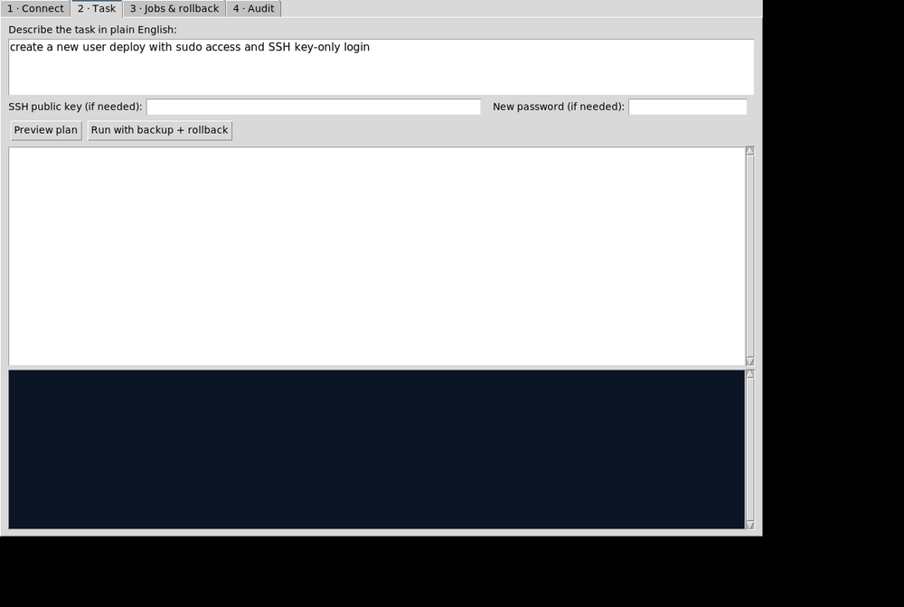

Plain-English Linux administration
Describe the goal — the tool generates the exact commands (with undo commands), snapshots affected files first, executes over SSH, and auto-rolls back if anything fails.
You: "Create a new user 'deploy' with sudo access and SSH key-only login"
→ useradd + sudo group + authorized_keys, with snapshot & undo
You: "Set up a cron job to backup /var/log to /backup/logs every day at 2"
→ cron job installed under /etc/cron.d, rollback removes it
You: "Configure firewall to allow port 443 and block port 23"
→ firewalld/ufw rules detected & applied, with exact undo
You: "Rotate the logs"
→ apropos on the server proposes logrotate with its man summary — you approve, it runs audited
→ useradd + sudo group + authorized_keys, with snapshot & undo
You: "Set up a cron job to backup /var/log to /backup/logs every day at 2"
→ cron job installed under /etc/cron.d, rollback removes it
You: "Configure firewall to allow port 443 and block port 23"
→ firewalld/ufw rules detected & applied, with exact undo
You: "Rotate the logs"
→ apropos on the server proposes logrotate with its man summary — you approve, it runs audited
What you get
- ✓~28 verified task playbooks
- ✓apropos / man-k discovery fallback
- ✓Pre-change tar snapshots
- ✓Auto-rollback on any failure
- ✓One-click rollback of past jobs
- ✓Full audit log + HTML export
- ✓Windows installer (Inno Setup)
- ✓100% offline — no AI calls

How access works
- Submit an access request with your name, organization, target environment, and intended use.
- The administrator reviews the request.
- After approval, you receive a private access code through an approved channel.
- Enter the code above — the official downloads unlock on this page.
- Run the installer, connect to your Linux server over SSH, and type prompts in plain English.
Note: Requires SSH connectivity to the target server. Works 100% offline — no AI service, no data leaves your machine. Every executed command is recorded in the audit log.